문제와 성공 기준
누가, 어떤 상황에서, 무엇이 문제인가
성공 기준
리뷰 분석으로 떠나갈 고객과 돌아올 고객을 가르는 신호가 나오면 성공. 같은 별점 안에서 리뷰의 길이, 경험, 감정 세기를 가설 4개로 판정하고, 미리 정한 기준(H1·H2·H4 p<0.05, 표본이 작은 H3 p<0.15)을 넘은 것만 신호로 인정한다.
결과: 리뷰 신호로 고객을 나누면 하위 10%는 6.4%, 상위 10%는 11.6%만 다시 돌아온다 (전체 9.5%). 찾은 신호는 PART 02 대시보드에서 매일 쓴다.
메트릭 하이라키와 고객 여정
감동은 매출로 가는 길의 한가운데 있고, 배송·사용·문제 해결 단계에서 생긴다
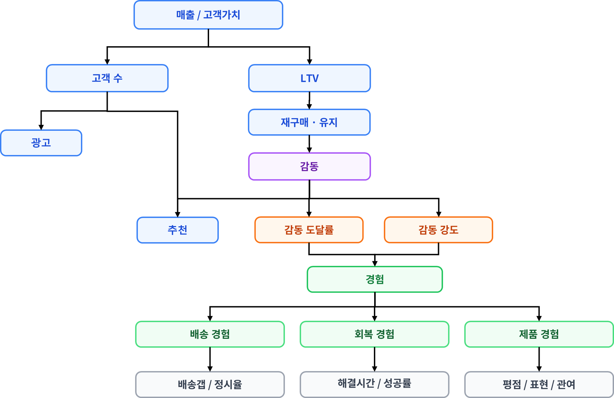
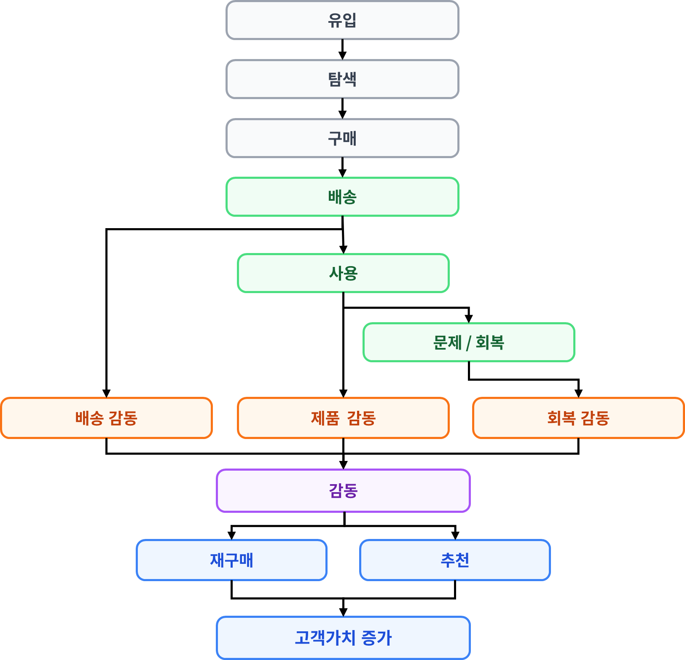
데이터와 분석 범위
Amazon Reviews 2023 (UCSD McAuley Lab) · 리뷰 ~2023년 3월, 첫 리뷰 기준 ~2022년 3월까지
Grocery
식료품. 지속적으로 소비해 카테고리 안 구매 빈도가 매우 높은 고빈도 필수 소모품
Fashion
의류. 계절과 트렌드에 따라 같은 카테고리 안 다회 구매가 활발한 취향 중심 영역
Appliances
가전. 구매 주기가 길고 단가가 높아 재구매율이 낮은 대표 내구재
All Beauty
뷰티. 주기적으로 소진되고 브랜드 충성도와 개인화가 강한 영역
카테고리 선택 근거: 고빈도 필수재부터 저빈도 내구재까지 성격이 대비되는 카테고리를 두루 포함해, 기본 재구매율이 달라도 같은 패턴이 나오는지 확인한다.
| 카테고리 | 첫 리뷰 고객 | 기준 행동률 |
|---|---|---|
| Grocery | 5,551,970 | 14.72% |
| Fashion | 1,814,755 | 5.66% |
| Appliances | 1,424,338 | 4.59% |
| Beauty | 536,819 | 2.66% |
| 합계 | 9,327,882 |
후속 행동 = 같은 고객 + 같은 카테고리 + 이후 시점의 리뷰
첫 리뷰 작성 후 7~365일 사이에 같은 user_id가 같은 카테고리에 리뷰를 쓴 비율. 실제 구매 이력이 없어 재구매를 직접 볼 수 없고, 다른 카테고리 리뷰는 같은 경험의 연속 행동으로 보기 어렵기 때문이다(범주화 이론). 리뷰를 쓰지 않은 구매는 보이지 않으므로 실제 재구매율이 아닌 행동 Proxy다.
데이터 구조 보기 (User Reviews, Item Metadata)
| 컬럼 | 타입 | 설명 | 이 프로젝트 사용 |
|---|---|---|---|
| user_id | str | 리뷰어 ID | 후속 행동 Proxy의 핵심 (같은 user 추적) |
| rating | float | 별점 1~5 | H1 만족도 |
| title | str | 리뷰 제목 | 텍스트 분석 시 text와 합쳐 사용 |
| text | str | 리뷰 본문 | H2 길이, H3·H4 텍스트 분석 |
| asin | str | 상품 ID | 보조 |
| parent_asin | str | 상위 상품 ID (색상·사이즈 변형 묶음) | 메타데이터 조인 키 |
| timestamp | int | 리뷰 작성 시각 (Unix ms) | 관찰 창(censoring) 처리의 핵심 |
| helpful_vote | int | 유용성 투표 수 | 보조 |
| verified_purchase | bool | 실구매 인증 여부 | 필터링 (Proxy 신뢰도) |
| images | list | 사용자가 올린 이미지 | 미사용 |
Item Metadata: parent_asin(조인 키), main_category, title, average_rating, rating_number, price(결측 많음), store, categories, features·description, details.
H1 · 만족도: 별점 지지 (5점 예외)
- 핵심 질문
- 고객의 긍정적인 경험은 다음 행동으로 이어지는가?
- 가설
- 만족도가 높은 고객일수록 후속 행동률이 높을 것이다.
- 지표
- 만족도 = 별점 · 후속 행동률 = 후속 리뷰를 쓴 고객 / 해당 조건 고객
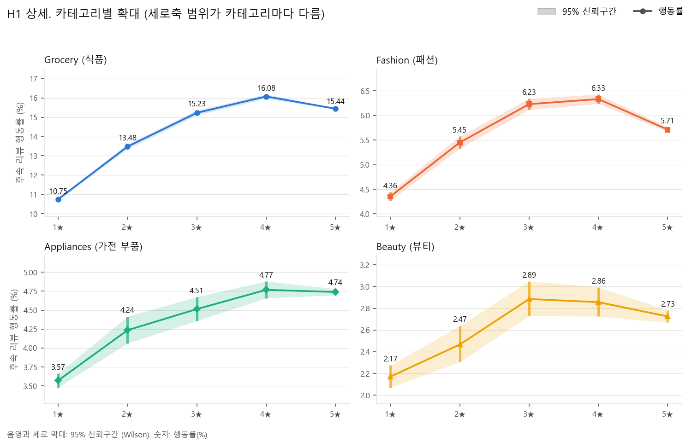
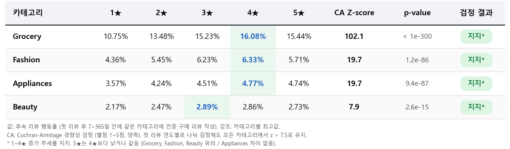
H2 · 관여도: 리뷰 길이 지지
- 핵심 질문
- 왜 5점 고객의 후속 행동률이 4점보다 낮을까? 같은 별점을 준 고객 사이에도 차이가 있지 않을까?
- 가설
- 같은 만족도라면, 리뷰에 더 적극적으로 관여한 고객의 후속 행동률이 높을 것이다.
- 지표
- 관여도 Proxy = 리뷰 글자 수 · 통제 = 같은 별점 안에서 비교 · 결과 = 후속 행동률
- 왜 글자 수
- 마음은 언어로 표현되고, 정성이 더 들어간 리뷰에는 제품과 브랜드에 대한 마음이 더 담겨 있다.
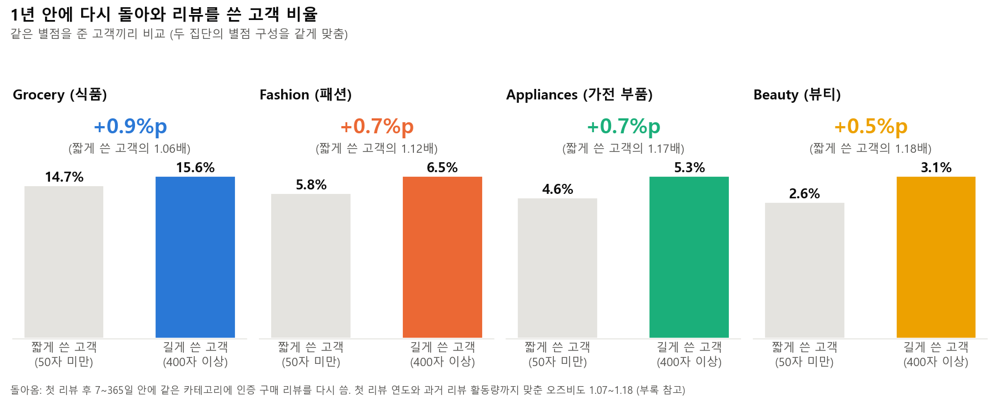
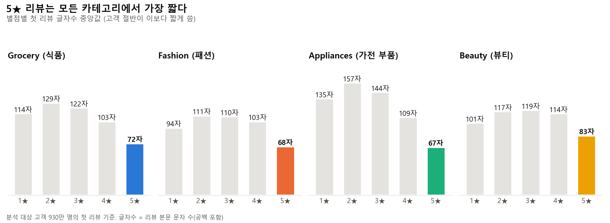
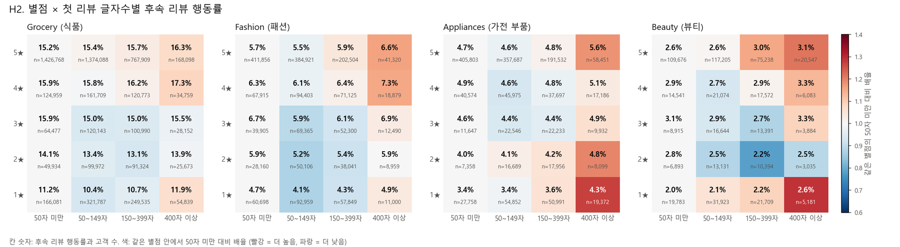
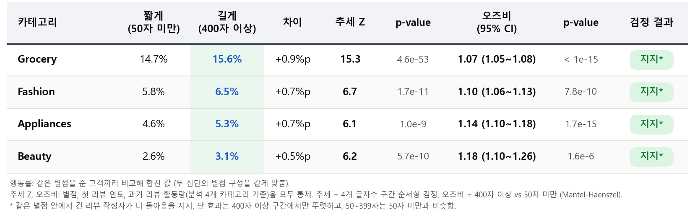
H3 · 경험: 리뷰 내용 일부 지지
- 핵심 질문
- 같은 별점을 주었는데, 돌아온 고객과 안 돌아온 고객은 리뷰에서 무엇을 다르게 말했을까?
- 가설
- 후속 행동을 보인 고객과 그렇지 않은 고객은 리뷰에서 표현한 경험의 내용이 다를 것이다.
- 표본
- 1~2점, 3점, 4점, 5점 그룹마다 돌아온 고객과 안 돌아온 고객을 카테고리마다 500명씩 (그룹마다 4,000명)
- 판정
- AI 판정: 판정 규칙 문서(코드북)를 따라 리뷰마다 경험을 표시, 두 AI가 서로 모르게 판정. 사람 검증: 두 AI가 엇갈린 리뷰와 무작위 표본 516건을 직접 판정해 규칙을 두 번 고침
- 지표
- 조건(카테고리·별점·글자수·선물·다른 경험)을 맞춘 후속 행동률과 오즈비. p<0.15 신호 있음, p<0.20 약한 신호
리뷰 속 경험을 '언제, 누구의 일인가'로 세 가지로 나눴다
| 경험 | 범위 | 칭찬 / 해결됨 | 불만 / 안 됨 |
|---|---|---|---|
| 배송 | 주문부터 문 앞 도착까지 · 택배, 포장 | "이틀 일찍, 꼼꼼하게 포장돼 왔어요" | "도착 예정일보다 일주일이나 늦게 왔어요" |
| 제품 | 받은 뒤 쓰고 먹어 본 경험 · 제품 자체 | "맛있어서 아이들이 매일 찾아요" | "한 달 만에 끈이 끊어졌어요" |
| 문제 해결 | 문제가 생긴 뒤 · 판매자와 아마존의 대응 | "사진을 보내자 바로 환불해 줬어요" | "교체를 두 번 요청했는데 답이 없어요" |
헷갈리는 경우는 규칙으로 고정: 박스가 찌그러져 깨진 채 도착 → 배송 불만, 박스는 멀쩡한데 처음부터 불량 → 제품 불만, "반품했어요"만 있음 → 원인을 보고 판단, "Cheap"·"Ok"처럼 뜻이 모호 → 표시 안 함. 예시 문장은 규칙 설명용으로 만든 문장이다.
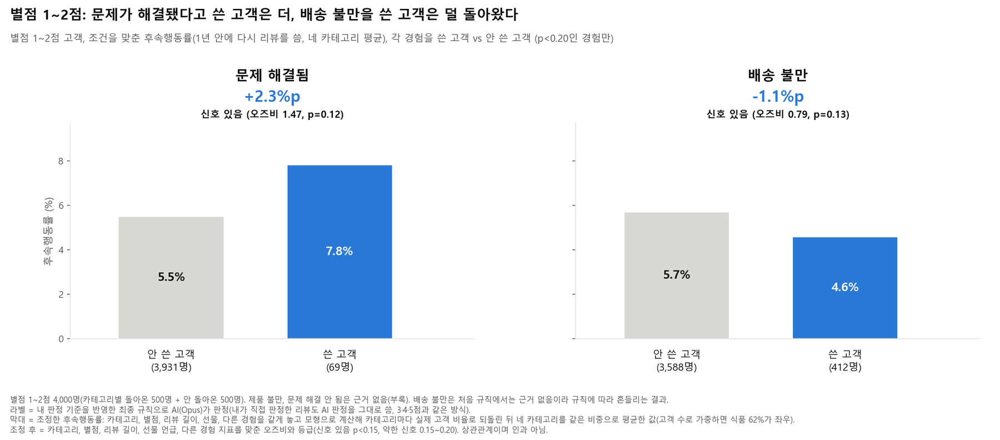
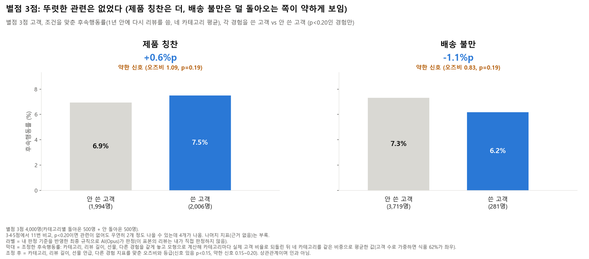
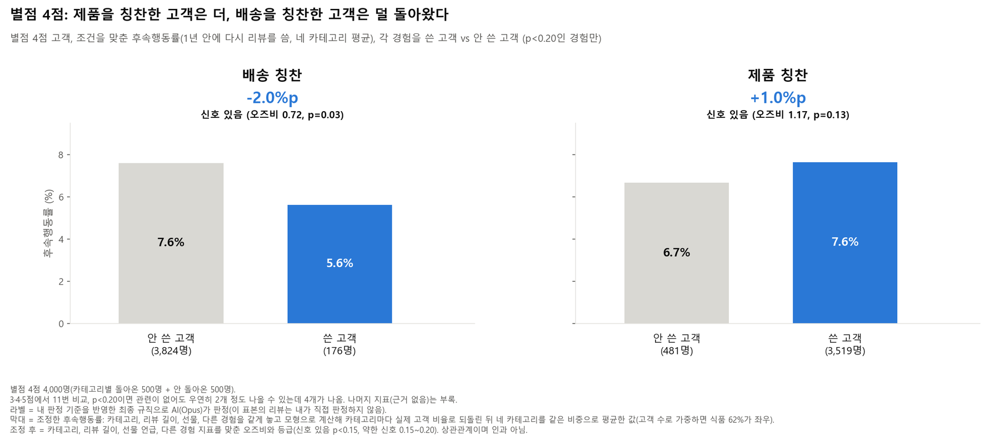
별점 5점 결과 보기
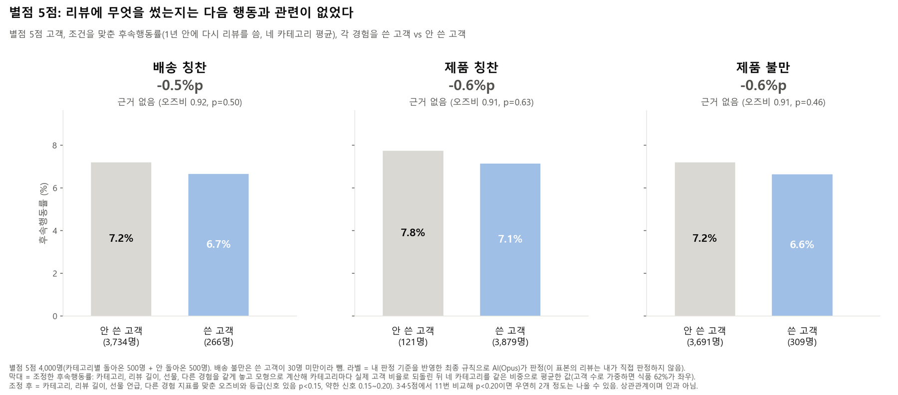
3점: 제품 칭찬을 쓴 고객은 더 높았고, 배송 불만을 쓴 고객은 더 낮았다(약한 신호).
4점: 제품 칭찬을 쓴 고객은 더 높았다(1.17). 5점: 후속 행동률과 관련이 적다.
→ 회복 경험, 배송 불만, 제품 칭찬을 KPI 지표로 추적하자.
H4 · 마음: 감정의 세기 가설과 반대 방향
- 핵심 질문
- 같은 별점을 주었을 때, 후속 행동을 보인 고객은 리뷰에서 감정을 얼마나 드러낼까?
- 가설
- 불만 고객(1~2점): 다시 돌아온 고객은 부정 감정을 더 잔잔하게 표현했을 것이다.
만족 고객(4~5점): 다시 돌아온 고객은 긍정 감정을 더 강하게 표현했을 것이다. - 측정
- 공식 감정 사전(NRC, VADER) + 강조 규칙(느낌표 연속 3개 이상, 대문자 등)으로 감정 점수를 매겨, 긍정·부정 각각 4단계(없음/약함/중간/강함)로 나눔. 첫 리뷰 930만 명 전체에 적용
- 판정
- p<0.05
리뷰에 감정을 얼마나 세게 드러냈는지를 4단계로 나눴다 (긍정, 부정 따로)
| 세기 | 정의 | 긍정 예 | 부정 예 |
|---|---|---|---|
| 없음 | 감정 없이 사실만 | "잘 작동해요" | "3주 만에 고장 났어요" |
| 약함 | 미지근하거나 조심스러운 감정 | "꽤 괜찮아요" | "조금 실망스러워요" |
| 중간 | 보통 세기의 분명한 감정 | "너무 좋아요!" | "많이 실망했어요" |
| 강함 | 극단적인 말, 강조, 삶에 미친 영향 | "완전 사랑해요!!!" | "완전 쓰레기예요!!!" |
세기를 정하는 기준: 제품이 좋은지가 아니라 글쓴이의 감정 세기, 가장 센 표현 하나로(길이나 칭찬 개수는 세지 않음), 강조는 감정에 붙을 때만, 행동 권유('추천해요', '돈 아까워요')는 세지 않음. 감정 강도 연구(SemEval-2018)의 4단계에 판정 기준을 더했다.
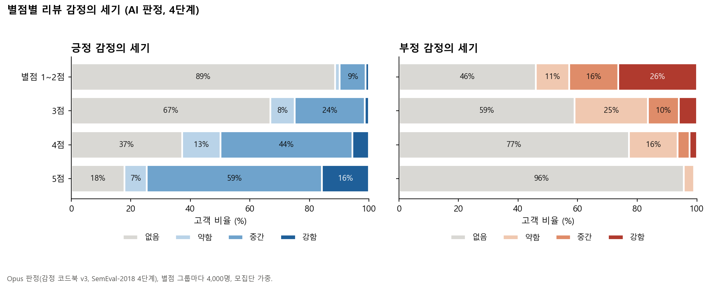
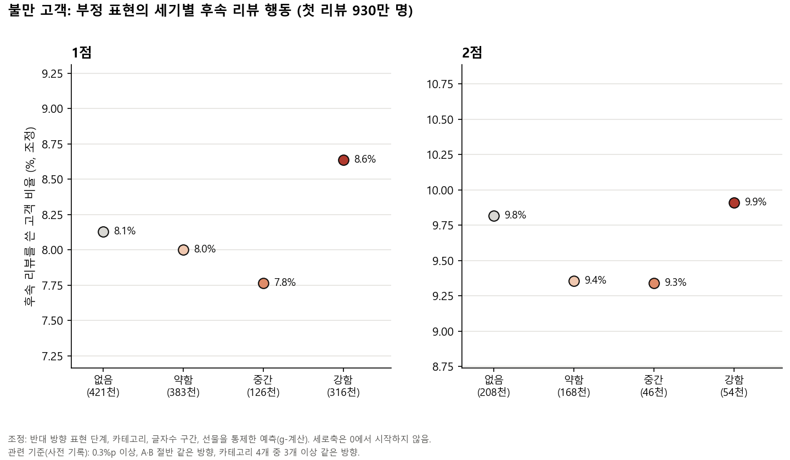
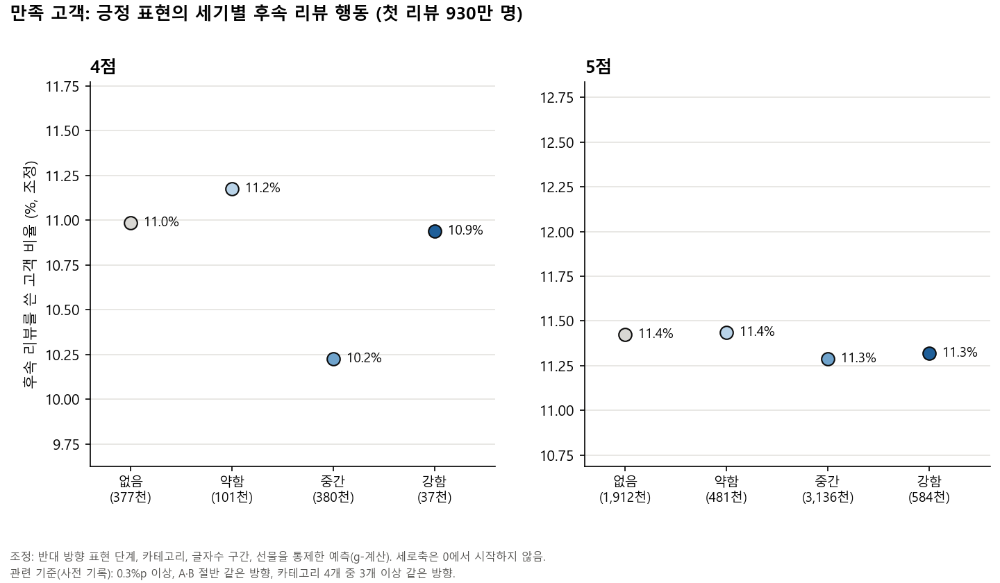
PART 01 종합
리뷰 신호로 고객을 나누면 다시 돌아올 고객과 아닌 고객이 갈린다. 그러나 리뷰 글로는 마음의 크기를 다 재지 못한다
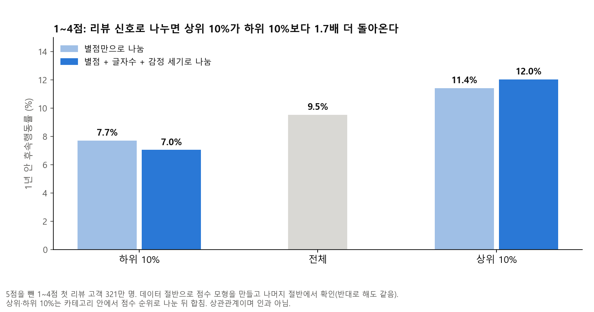
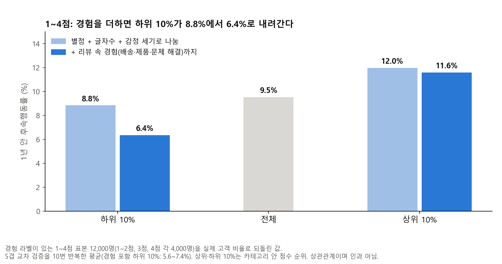
고객 감동 모니터링 대시보드
주문마다 PART 01의 오즈비로 긍정·부정 울림을 정하고, 다섯 화면으로 비율에서 고객 한 명까지 내려간다
구매 후 설문: 마음을 직접 묻는다
도착 3일 뒤 모든 주문에 보내는 객관식·비공개 설문
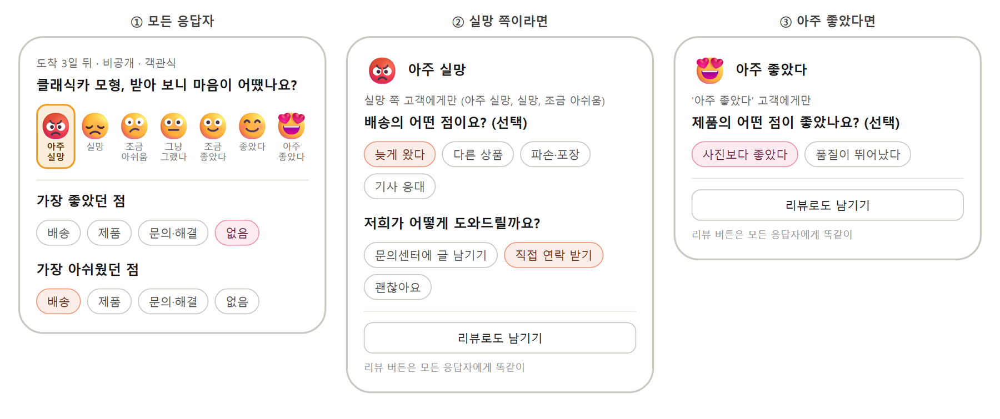
① 표정 7단계
별점 대신 "받아 보니 마음이 어땠나요?"를 아주 실망부터 아주 좋았다까지 일곱 표정으로 묻는다. 방향과 세기(H4의 4단계)를 한 번에 답한다. PART 01에서 5점에는 그냥 괜찮은 고객과 감동한 고객이 섞여 있었기 때문이다.
② 실망 쪽이라면
무엇이 아쉬웠는지와, 문의센터에 남길지·직접 연락을 받을지·괜찮은지를 묻는다. '괜찮아요'라고 답한 고객이 가장 조용한 이탈 위험이다.
③ 아주 좋았다면
특히 좋았던 점을 묻는다. 리뷰 버튼은 모든 응답자에게 똑같이 보여, 만족한 고객만 리뷰로 보내지 않는다.
Tableau 대시보드
감동 하트
무게 = ln(PART 01 오즈비), 만족 구간마다 다르다.
1~2점 문제 24시간 내 해결 +0.39 · 배송 불만 -0.24
3점 제품 칭찬 +0.09 · 배송 불만 -0.19
4점 제품 칭찬 +0.16 · 5점 무게 없음
합이 0보다 크면 긍정 울림, 작으면 부정 울림
다섯 화면
01 Overview(감동은 얼마나 차 있나) → 02 Deep Dive(무엇이 가르나) → 03 Risk & Recovery(누구를 먼저 챙기나) → 04 고객 상세 → 05 Measurement Health(숫자를 믿어도 되나). 화면 사이는 클릭으로 이동한다.
매일 쌓이는 데이터
매일 07:00 어제까지의 주문을 자동으로 만들고 지표를 다시 계산한다. 기간(전체·최근 1년·6개월·90일)과 재구매 기간(30일·90일·180일·1년)을 고를 수 있다.
아래는 실제 Tableau 대시보드 화면이다.
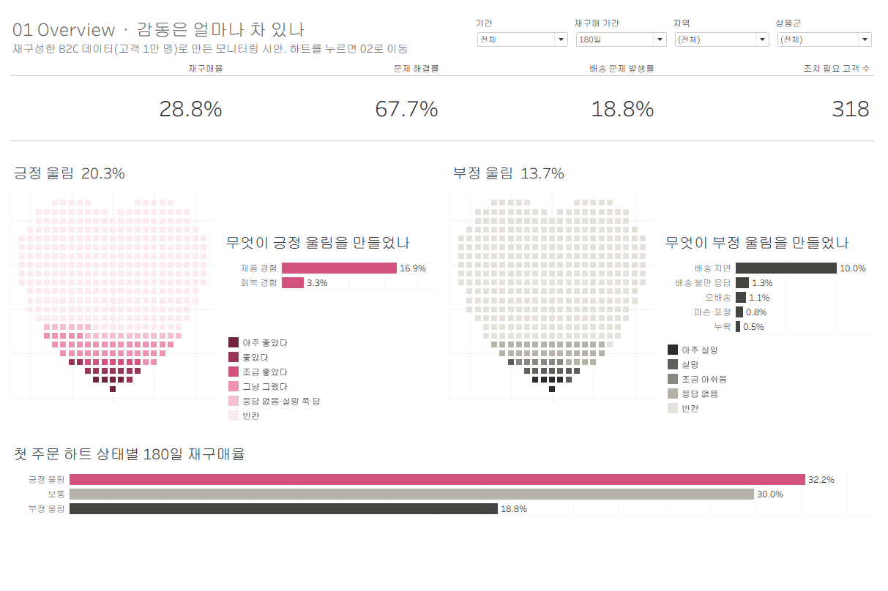
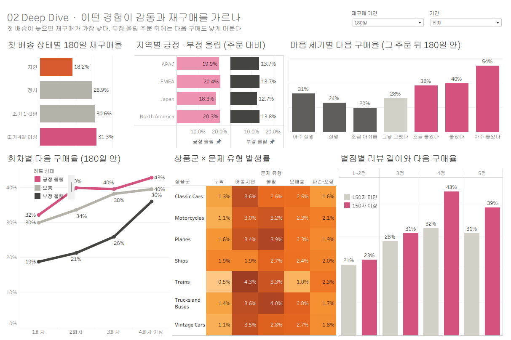
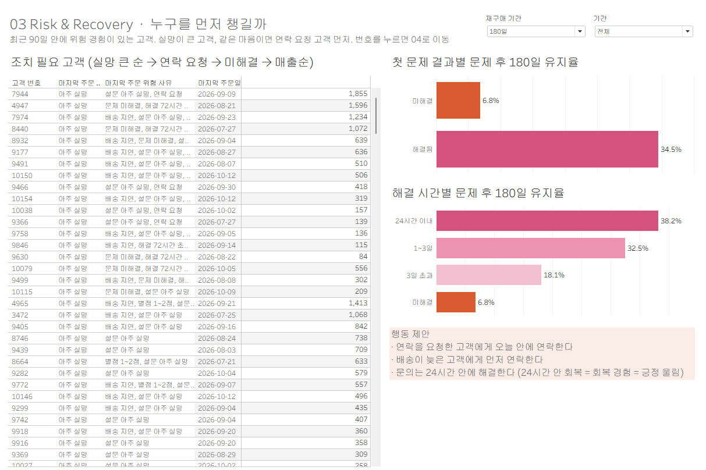
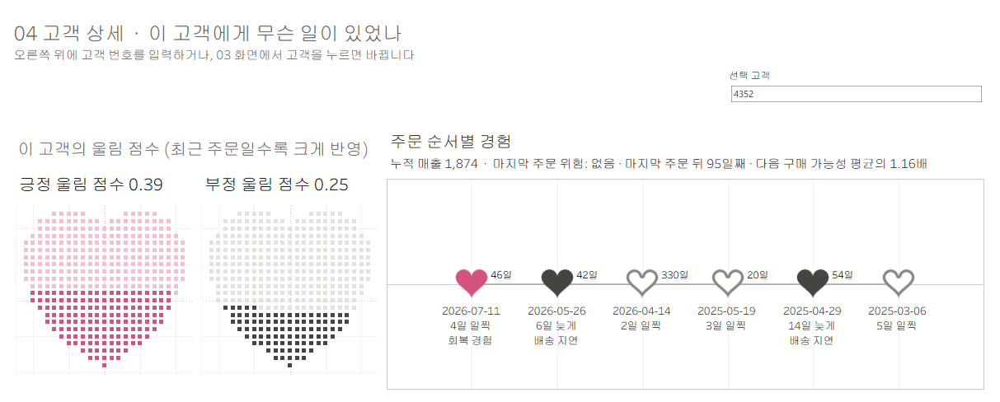
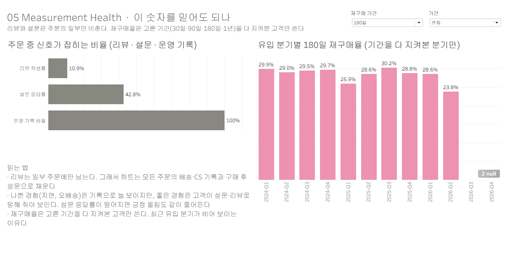
한계
PART 01
- 재구매를 직접 보지 못한다 (후속 리뷰를 대리 지표로 씀)
- 리뷰를 쓴 고객만 보인다
- AI 판정이 완벽하지 않을 수 있다
- 경험 분석에서 해당 경험을 가진 고객의 수가 적다
PART 02
- 데이터가 합성이라 숫자는 가정을 되풀이할 뿐이다
- 나쁜 경험(지연, 오배송)은 운영 기록으로 늘 보이지만, 좋은 경험은 고객이 설문·리뷰로 말해 줘야 보인다. 긍정 울림의 약 70%가 설문에서 나오므로, 설문 응답률이 떨어지면 마음이 그대로여도 긍정 울림이 줄어든다
- 경험의 무게가 서로 독립적으로 더해진다는 가정, 고객 점수의 반감기 180일은 설계 선택이다
- 다음 단계: 실제 설문 데이터로 하트 무게를 다시 잰다
AI 사용 공개
어디에 썼나
리뷰 속 경험 판정(H3)과 감정 세기 판정(H4). Claude(Sonnet, Opus) 두 모델이 판정 규칙 문서(코드북)를 따라 서로 모르게 리뷰마다 경험과 감정 세기를 표시했다.
사람이 검증한 것
- 두 AI가 엇갈린 리뷰와 무작위 표본 516건을 직접 판정해 AI 판정과 비교
- 그 결과로 경험 사전(코드북) 수정: 헷갈리는 경우를 규칙으로 고정하고 기준을 두 번 고침
- 감정 사전 수정: 감정 세기 4단계 기준을 다듬고, 같은 단계를 감정 사전(NRC, VADER)과 강조 규칙으로 재현해 930만 명 전체에 적용